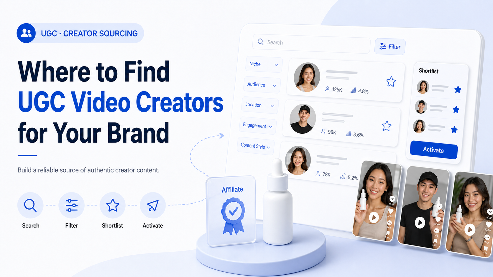

WE Marketing · WEM Blog
Where to Find UGC Video Creators for Your Brand

Looking for UGC creators? TikTok Shop affiliates are the most cost-effective source of authentic video content. Here's how to find, vet, and work with them.
- TikTok Shop agency strategy
- Creator affiliate and UGC operations
- Product page, content, and conversion guidance
WE Marketing / WEM 发布 TikTok Shop 代运营、达人联盟、UGC、直播和商品页转化相关实战内容。
Back to WE Marketing blog